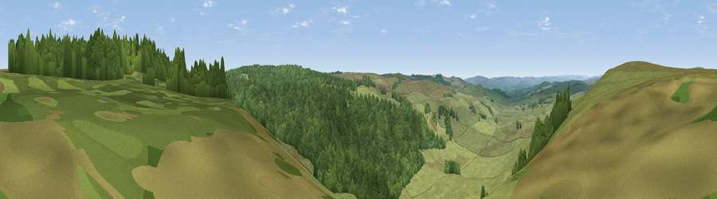

Viewpoint near Elsdon
#27667 in England · top 71% of its area beats it · near Elsdon · open accessWhere it is
The exact computed spot (NY 95925 93475). Click the marker for map links.
Public access: this spot lies on mapped open-access land (CRoW Act 2000) — you may roam here on foot. Computed from Natural England's CRoW access layer and OpenStreetMap rights of way — not the legal definitive map. Always verify locally.
The view, rendered

A 360° render of this exact spot computed from the terrain model, tree cover and land cover — summer colours, afternoon light, calibrated against photographs of famous viewpoints. Real trees, hedges and buildings will differ in detail.
The panorama
Grey silhouette: terrain skyline in each direction (720 bearings, Earth curvature and refraction included). Dashed green: skyline with trees (+15 m) and buildings (+8 m) as obstacles. Blue strip: how far the ground is visible on each bearing.
Where the view opens
Wedge length = distance to the farthest visible ground on that bearing (vegetation-aware). Rings at 10, 25 and 50 km.
What fills the view
63% grassland · 37% woodland
Angular shares of the visible panorama (visual magnitude), not map area. Landscape diversity 0.29 (0–1 Shannon).
Key numbers
More beautiful places nearby
The staircase of upgrades: each row has a higher view potential than everything closer. Driving times are estimates from straight-line distance, calibrated against real road routing — check an actual route before setting out.
| Place | Direction | Drive | Score |
|---|---|---|---|
| Viewpoint near Elsdon | NW · 0 km | ~2 min | 55.4 |
| Viewpoint near Elsdon | NNE · 1 km | ~4 min | 70.3 |
| Viewpoint near Elsdon | NNE · 2 km | ~6 min | 71.9 |
| Darden Rigg | NE · 4 km | ~10 min | 77.0 |
| Viewpoint near Hepple | NE · 8 km | ~16 min | 82.4 |
| Viewpoint c12273_7856 | N · 20 km | ~34 min | 83.7 |
| Viewpoint c12396_7887 | N · 26 km | ~42 min | 85.7 |
| Viewpoint near Chillingham | NNE · 34 km | ~52 min | 88.1 |
55.23546, -2.06562 · source: screening · position refined by local search. Computed location — check access rights before visiting.